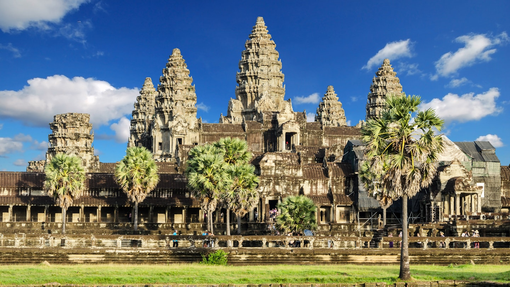

Angkor Wat (Cambodia)
Angkor Wat is the largest religious monument in the world, built by the Khmer Empire in the 12th century. It is famous for its detailed stone carvings and beautiful temple towers. The site represents the rich cultural and architectural history of ancient Cambodia.
Himeji Castle (Japan)

Himeji Castle, also called the “White Heron Castle,” is one of Japan’s most beautiful and well-preserved castles. Built during the early 17th century, it shows traditional Japanese defensive architecture and stands as a symbol of Japan’s historical heritage.